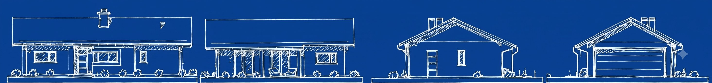

Fundamenty
Ławy, płyty fundamentowe i stopy — solidna podstawa pod każdą inwestycję.
Budownictwo & Inwestycje · Wieluń · Wieruszów · Kępno
Kompleksowe usługi budowlane dla klientów indywidualnych, firm i instytucji — fundamenty, murarka, żelbet, wylewki, posadzki, remonty, wykończenia i ogrodzenia. Nowoczesny sprzęt, terminy dotrzymane co do dnia.

Ławy, płyty fundamentowe i stopy — solidna podstawa pod każdą inwestycję.
Ściany nośne, stropy, wieńce i konstrukcje żelbetowe wykonane zgodnie ze sztuką budowlaną.
Wylewki cementowe, posadzki przemysłowe i pod ogrzewanie podłogowe.
Prace wykończeniowe wnętrz oraz kompleksowe remonty obiektów.
Ogrodzenia posesji prywatnych, firmowych i instytucjonalnych.
Malowanie natryskowe elewacji i powierzchni wewnętrznych.
Każdy etap realizacji nadzorowany i wykonany według sztuki budowlanej.
Ustalony harmonogram, którego dotrzymujemy — bez niespodzianek.
Sprawdzone materiały i doświadczona ekipa na każdej budowie.
Sprawna realizacja inwestycji dzięki profesjonalnemu wyposażeniu.
Realizujemy inwestycje na terenie Wielunia, Wieruszowa, Kępna i okolic, a także w całym woj. łódzkim, opolskim i wielkopolskim. Zapraszamy do współpracy klientów indywidualnych, firmy oraz instytucje.